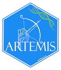

The artemis package was created to aid in the design and analysis of eDNA survey studies by offering a custom suite of models for eDNA sampling and qPCR data. It implements a set of Bayesian latent-variable, truncated data models which are fit using Stan.
Installation
While it is possible to install artemis to run natively on Windows, artemis is most stable and easiest to install under Unix OSs (Mac OSX or Linux). As such, we recommend using one of these operating systems. Users of Windows OS should consider running the Windows Subsystem for Linux to ensure best compatability and stability.
Please be aware, the development team of artemis is small with limited resources. Therefore, support for artemis installed on Windows will be limited.
Install cmdstanr
The artemis package requires the cmdstanr package (as of 2022-03-24). Please follow the installation guide from cmdstanr. For Unix systems, this can generally be installed via a single command in R:
install.packages("cmdstanr", repos = c("https://mc-stan.org/r-packages/", getOption("repos")))Notes for Windows users: cmdstanr requires Rtools. It mighht also require R to be run with admin permissions (depending on your Windows configuration).
Install cmdstan
The cmdstanr package provides an interface to the shell tool cmdstan, but this needs to be installed as a separate step in R via
install_cmdstan()Verify cmdstanr toolchain
If cmdstanr and cmdstan were both installed correctly, the following commands should run without error:
library(cmdstanr)
# verify path and version
cmdstan_path()
cmdstan_version()
# Compile a model
file <- file.path(cmdstan_path(), "examples", "bernoulli", "bernoulli.stan")
mod <- cmdstan_model(file)
# Fitting the model
# names correspond to the data block in the Stan program
data_list <- list(N = 10, y = c(0,1,0,0,0,0,0,0,0,1))
fit <- mod$sample(
data = data_list,
seed = 123,
chains = 4,
parallel_chains = 4,
refresh = 500 # print update every 500 iters
)
# Print the results
fit$summary()If any of the above steps do not work correctly, please debug your cmdstanr and cmdstan installation before proceeding to install artemis.
Install artemis
Finally, the easiest way to install artemis is with the devtools or remotes package:
devtools::install_github("fishsciences/artemis")Compile the artemis models
The models included in artemis are not compiled on install - they must be compiled via a second step following installation:
artemis::compile_models()Testing your artemis installation
If your installation of artemis and its dependencies was successful, the following code should run without error (although you may see warning messages from Stan about Bulk/Tail Effective Samples Sizes being too low).
library(artemis)
model_fit = eDNA_lmer(Cq ~ scale(Distance_m) + scale(Volume_mL) + (1|FilterID),
eDNA_data,
std_curve_alpha = 21.2, std_curve_beta = -1.5)
summary(model_fit)Basic use
Please refer to the Getting Started with the artemis package vignette, which covers most of the functionality of artemis.
Reporting bugs
Please report all bugs via an issue at the package repo.